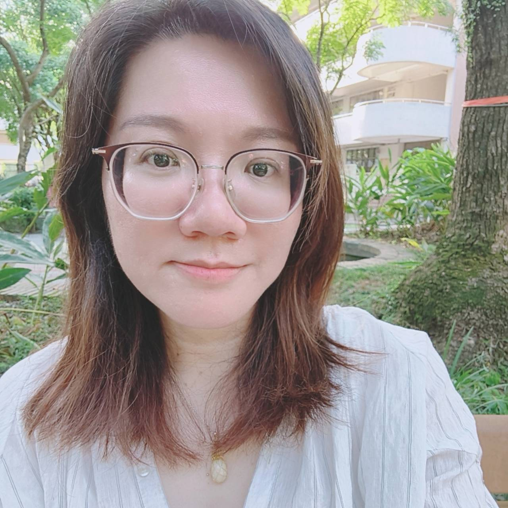
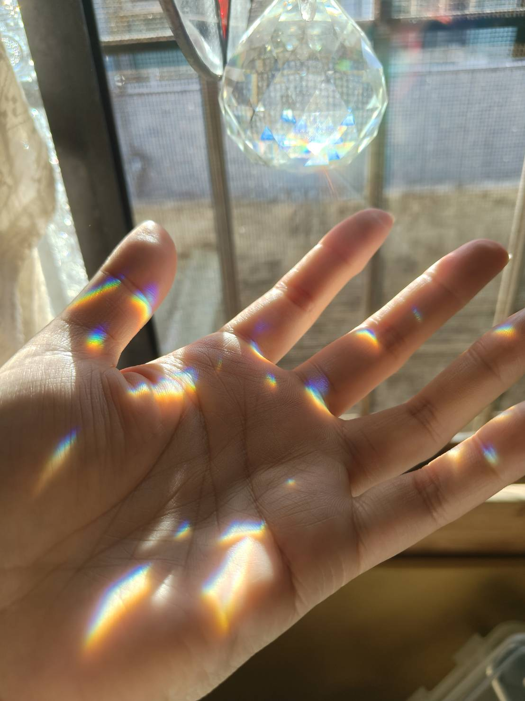

“當我先成為自己的定錨，自然就成為孩子在這個浮動宇宙裡，起步的源頭。”
當關係結束後，有沒有一瞬間覺得連自己都還揹著各種情緒，就要成為孩子唯一的依靠？當孩子和我們想的不一樣，當他在這個世界遇到的困難比別人多一點、慢一點、複雜一點，我們可能連悲傷的時間都沒有，就得先變成他的地基。
妳很努力在給他一個家，卻沒有人問過，妳自己內心那個曾經崩塌的「家屋」，還好嗎？這是一段真實的家庭重建故事，邀請妳來聽聽宥綸的故事，也好好接住自己。
一段家庭重建的歷程：一個媽媽如何在婚姻結束後，重新學習定義「家」；如何在發現孩子和想像不同時，與他站在一起。
回到那個最初、只屬於自己的庇護所，親手重新蓋起它。即使身在不同空間，也能同步在能量場上，練習為自己蓋起一座不需要任何人、任何條件，就能安放自己的內在空間。
想先為自己的內在找到一個可以停下來的地方。
想在孩子與自己的節奏之間，找到更穩的站姿。
想允許自己慢下來，感受真正的需要。
相信孩子看得見媽媽如何回到自己。

「在孕育中，相遇自己。」

尊重每一種孕育路徑，讓故事被聽見、讓女性找回自己。
除了這一場，我們還有每月新月的公益女人圈，以及線上與實體的孕育圈。